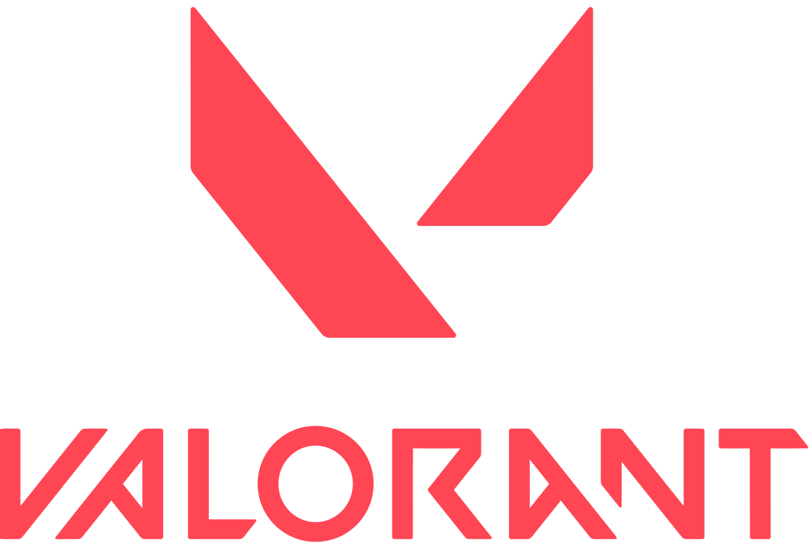
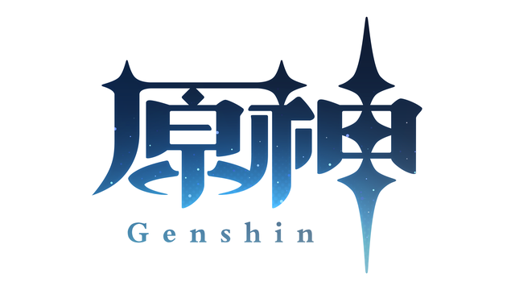
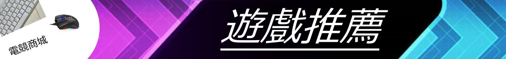

| 特戰英豪valorant | |
《特戰英豪》是基於團隊的射擊遊戲以及第一人稱射擊遊戲，經典玩法採取五打五的爆破模式，亦有其他原創模式供玩家選擇。 遊戲中有各式各樣的武器，以殺死敵軍、安裝炸彈、拆除炸彈以及回合勝利所獲取稱為「信幣（Creds）」的金錢，經由經濟系統來購買所需要的槍枝及護甲。 遊戲規則方面，類似於其他射擊遊戲中的「爆破模式」，進攻方會攜帶一枚稱之為「輻能核心（Spike）」的炸彈，須在回合時間內完成安置。如果進攻方成功保護炸彈引爆或將防守方成員全數殲滅，則視為回合勝利並獲得一分；若防守方成功殲滅進攻方成員並拆除炸彈，又或者進攻方未能在一分四十秒的回合時間內安置炸彈，則防守方獲得回合勝利；在十二輪交火後將進行攻守交換，最先取得十三回合勝利之隊伍即為比賽勝利。 |
 |
| 荒野亂鬥brawl stars | |
2017年6月14日，Supercell通過YouTube上的直播宣布了這款遊戲。它於2017年6月15日在加拿大的iOS應用商店上架，並於2018年1月19日進行公測。安卓版本於2018年6月26日在其他國家公開測試。兩個平台的全球版已經於2018年12月12日正式發行。
遊戲具有多種模式，每種模式都有不同的目標需要達成。玩家可以從各種英雄中進行選擇，並遊玩不同模式。而英雄是玩家可以在遊戲中通過屏幕上的操縱桿進行控制的角色。 |
|
| 原神 impact | |
| 遊戲劇情於虛構世界的提瓦特大陸上展開，該世界分成七個國家，每個國家分別以一種元素為主題，並由對應元素的神明所分管。遊戲劇情的主角為「旅行者」，是一對在無數個世界中旅行的兄妹，因遭遇陌生神明阻攔在提瓦特被迫分離。玩家將扮演旅行者，為了尋找自己失散的唯一血親，並與派蒙一同遊歷七國。 |  |
